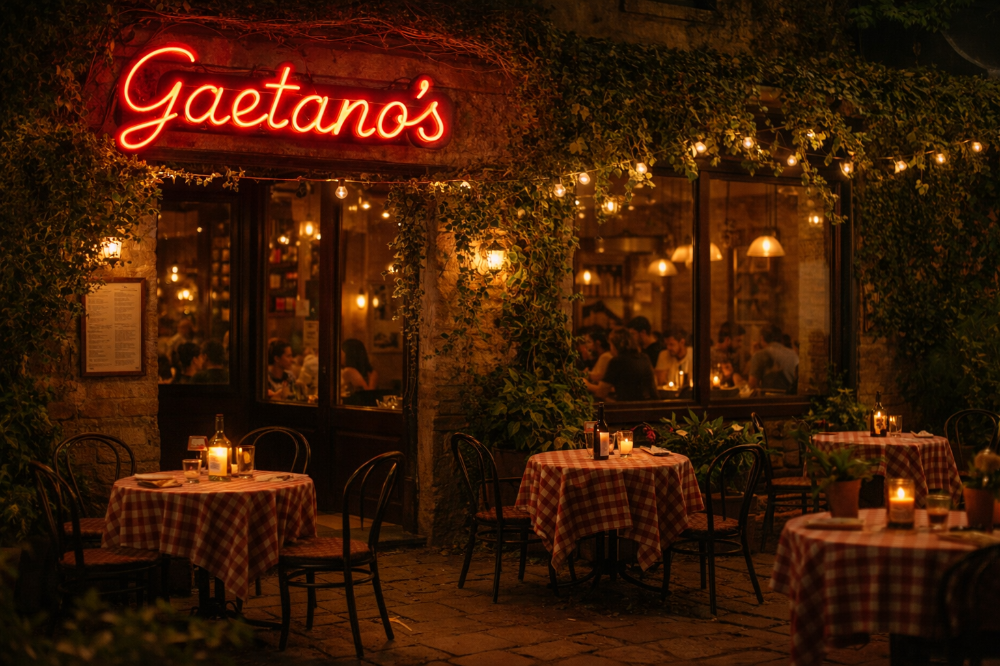
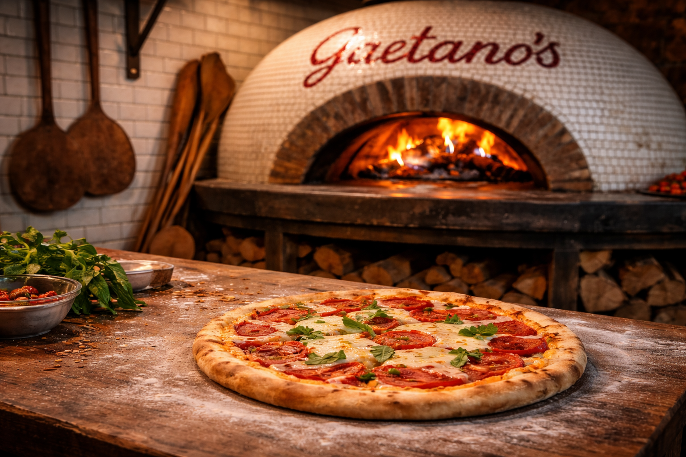

About Us

We are a family-owned, Southern Italian Restaurant since 1989 that specializes in Pizza Napoletana. Our pastas, pizza dough, toppings, and appetizers are all made in house with the highest quality of imported Italian ingredients to present an authentic, modern Italian cuisine. All of our pizzas are made in our wood-fired pizza oven with a thin, Napoletana style crust.
Since 1989, Gaetano’s has been a family-owned Southern Italian restaurant dedicated to bringing the authentic flavors of Naples to the heart of San Francisco. Rooted in tradition and inspired by generations of Italian cooking, our restaurant was founded with the goal of sharing the warmth, simplicity, and craftsmanship that define true Southern Italian cuisine.
At Gaetano’s, everything begins with quality ingredients and time-honored techniques. Our pastas, pizza dough, sauces, toppings, and appetizers are all made in-house using the highest quality imported Italian ingredients to create an authentic yet modern Italian dining experience. From the rich tomatoes of Southern Italy to fresh herbs and creamy cheeses, every dish reflects our commitment to flavor, freshness, and tradition.

Our specialty is Pizza Napoletana, prepared the traditional way in our wood-fired pizza oven. Each pizza features a delicate, thin Napoletana-style crust with a perfectly blistered edge, cooked at high heat to achieve the balance of lightness, texture, and bold flavor that Neapolitan pizza is known for. Simple ingredients—such as fresh mozzarella, San Marzano tomatoes, basil, and extra virgin olive oil—come together to create pizzas that are both rustic and refined.
More than just a restaurant, Gaetano’s is a place where family, friends, and community gather around great food. For over three decades, we’ve been proud to share our passion for Southern Italian cooking with San Francisco, welcoming every guest with the same hospitality you would find around a family table in Naples.